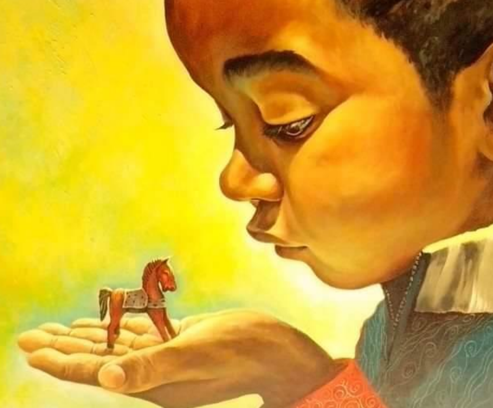
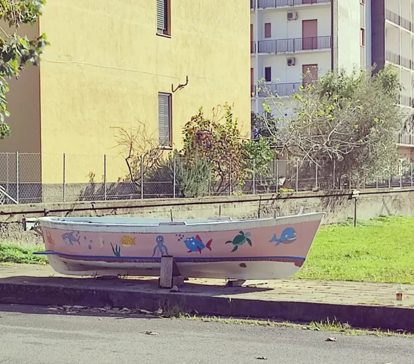
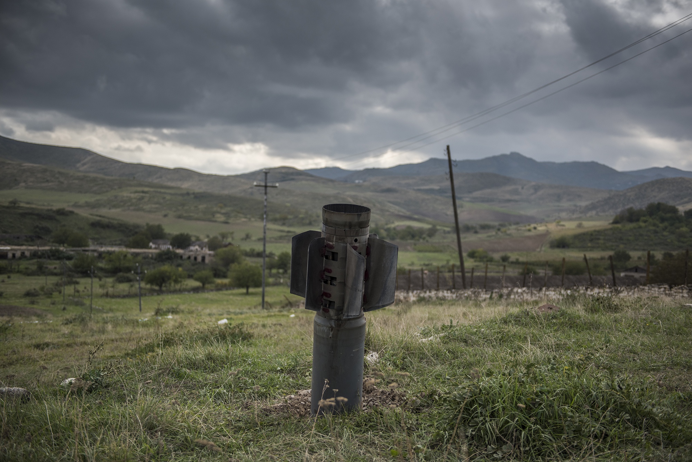

Layla
Nella medina di Tangeri, un turista incontra una bambina misteriosa che gli indicherà la strada per uscire da quel labirinto.
Leggi su Blam!Scrivo storie.

Sono cresciuto a Salerno, ho vissuto 6 anni a Brighton e dal 2018 abito a Valencia. Sono nato sul mare per caso, ci sono rimasto per scelta.
Dopo la laurea in Letteratura Italiana con una tesi su Luigi Meneghello, ho ottenuto un dottorato in Italianistica indagando i rapporti fra gli scrittori italiani e il cinema del primo Novecento.
Ho realizzato il cortometraggio Indice di frequenza con Alessandro Haber e sono stato finalista al Premio Solinas con la sceneggiatura Mammaliturchi!, da cui ho tratto l’omonimo romanzo, attualmente inedito.
Ho pubblicato il romanzo Un’opera di bene e circa quaranta racconti apparsi su riviste letterarie e antologie in Italia e Spagna.
Attualmente sto lavorando a una raccolta di racconti dedicati all’infanzia e all’adolescenza, scritta contemporaneamente in italiano e francese.
Le mie storie spesso nascono quando un dettaglio che sembra insignificante cambia il modo in cui guardiamo la realtà. Da quel momento, le cose non sono più le stesse.
Quando non scrivo, lavoro come guida turistica.
Parlo correntemente spagnolo, francese e inglese. Me la cavo discretamente con il valenciano. Poi, con un eccesso di fiducia in me stesso, ho deciso di studiare l’arabo.
Mi piacerebbe suonare il pianoforte e aggiustare le cose rotte. Non ho talento per nessuna delle due cose.
Una selezione di miei racconti pubblicati in riviste letterarie.
Nella medina di Tangeri, un turista incontra una bambina misteriosa che gli indicherà la strada per uscire da quel labirinto.
Leggi su Blam!
Un missile, lanciato chissà da chi, si pianta senza esplodere in un campo ai margini di un villaggio caucasico, stravolgendo la vita dei suoi abitanti.
Leggi su Altri animali
Un giovane solitario e povero va regolarmente al supermercato per cercare del cibo in offerta. L’apparizione di un uomo che comincia a contendergli il bottino potrebbe costringerlo a ripensare la propria vita.
Leggi su ’tina
Un bambino va a sotterrare uno scheletro giocattolo, ma l’impresa si rivela meno facile del previsto.
Leggi su Blam!
Quando c’era il Covid, ci si affacciava alle finestre per cantare. Qualcuno lo faceva anche per rivedere la giovane dirimpettaia.
Leggi su Patrengo
Un bambino racconta il terremoto dell’Irpinia. Con lui, quella notte, un’intera comunità si ritrova sospesa tra paura e sopravvivenza.
Leggi su Pastrengo
Una bambina scopre il piacere del proprio corpo. Quando arriva il primo ciclo, è convinta di essersi procurata una ferita mortale.
Leggi su Offline
La morte del padre spinge un giovane professore di filosofia a rielaborare un legame conflittuale. Attraverso i ricordi d’infanzia e il mare, il rancore cede il passo al silenzio.
Leggi QUI
Il mio romanzo Mammaliturchi! è ambientato in un’immaginaria cittadina sulla costa cilentana. Un giorno, passeggiando per le strade di Praia a Mare, mi sono trovato di fronte a questa scena surreale: un gozzo “parcheggiato” sul marciapiedi.
Mi è venuto in mente l’incipit del romanzo, in cui, fra l’altro, descrivo le persone del posto, e ho capito subito che dovevo dare testimonianza di quello che avevo appena visto. E così, appena sono tornato a casa, ho aggiunto un periodo al testo che avevo già scritto. Lo trovate in fondo a questo breve estratto.
In quella bella mattina, dunque, chi lavorava sul mare benediceva il mestiere, e in verità la gran parte degli autoctoni pareva proprio forgiata dal mare, a giudicare dal colore e dal tono della pelle – da cui con una ditata si poteva tirar via una striscia di sale – dalla scattante robustezza del corpo, dalla pratica noncuranza nell’abbigliamento, dai gesti essenziali ed esatti del marinaio che affronta la burrasca. [...] È come se un giorno la terra li avesse sorpresi alle spalle e si fossero adattati malvolentieri alle strade trafficate, all’ombra troppo alta e ai colori accesi dei palazzi nuovi che risalivano la collina, all’afa che veniva dall’asfalto e dal cemento. Tutte quelle escrescenze terragne, che col tempo si erano fatte più dense e più sfacciate, parevano premere su di loro per ributtarli nel mare da cui venivano e liberarsi così della loro fastidiosa e ingrata presenza. Tuttavia, non mancavano sacche di resistenza: il mare s’infiltrava nella terraferma sotto forma di barchette e piccoli gozzi lasciati in rimessaggio sui marciapiedi o nei giardini, dove spesso giacevano anche lunghe cime avvolte in spire, come grossi cani addormentati.

Il mio racconto Nel campo di Azat (che potete leggere seguendo il link nella sezione “Opere scelte”) è stato ispirato da questa foto scattata a Martuni da Valery Melnikov, che mi ha autorizzato a usarla. La foto è stata premiata al World Press Photo, ed è stato proprio visitando una mostra a Valencia che l’ho scoperta.
Ricordo che il mio primo pensiero, al vederla, è stato: “Chissà che angoscia per le persone del posto quando hanno trovato questo missile inesploso in uno dei loro campi.” Da lì ho cominciato a immaginare una storia tragicomica narrata da uno degli abitanti del villaggio. Una prima versione del racconto è stata pubblicata in Spagna sulla rivista «Papenfuss». Quando poi l’ho inviato alla rivista italiana «Altri animali», è successa una cosa interessante: l’editor che l’ha letto mi ha risposto che apprezzava il testo, ma che l’avrebbero pubblicato solo se l’avessi sviluppato ulteriormente. Gli ho risposto che l’avrei fatto senz’altro, e qualche giorno dopo, durante un viaggio in aereo, ho finalmente arricchito la storia di nuovi episodi. Quando l’ho inviata di nuovo, la risposta è stata, per fortuna, molto positiva. Fra i miei racconti, Nel campo di Azat è forse quello che ha ottenuto più riconoscimenti. Oltre a essere stato pubblicato in italiano e spagnolo, infatti, nella versione in valenciano ha vinto il concorso di narrativa breve della Real Vila de Guardamar.
Se hai letto qualcosa che ti ha incuriosito, sarò felice di ricevere un tuo messaggio.